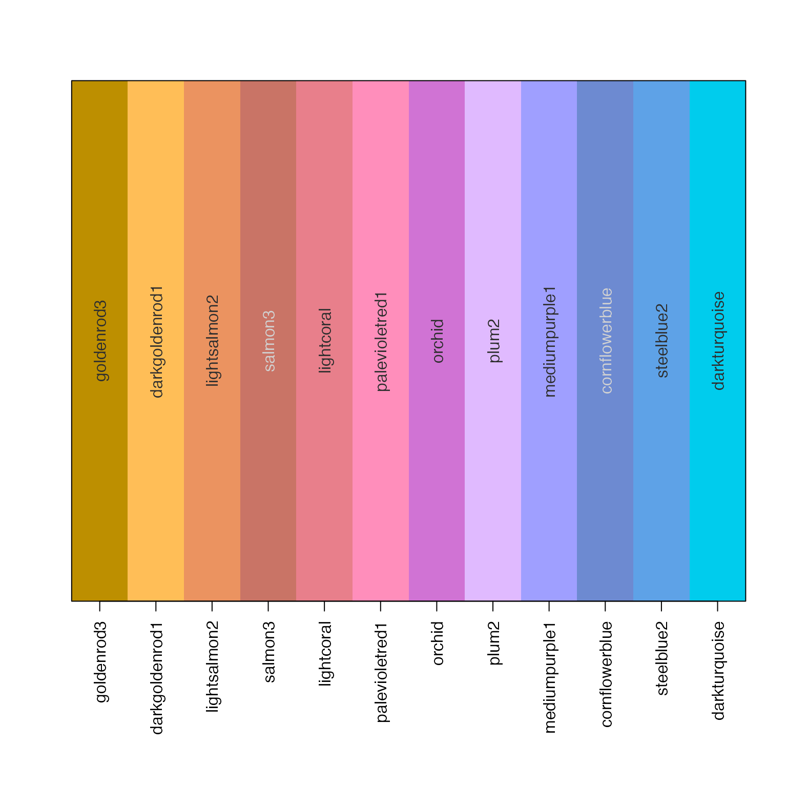
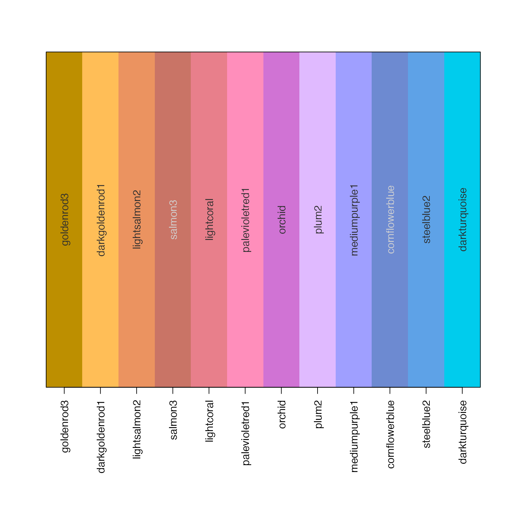

rainbow categorical colors using varied luminance and chroma
Usage
rainbowJam_v1(
n = NULL,
alpha = 1,
nfloor = 4,
hues = NULL,
Cvals = c(75, 95, 80, 65, 72, 80),
Lvals = c(62, 83, 69, 58, 65, 74),
Crange = NULL,
Lrange = NULL,
Cgrey = NULL,
Hstart = 12.2,
warpHue = TRUE,
doTest = FALSE,
sFactor = 1,
darkFactor = 1,
nameStyle = c("none", "hcl", "colors"),
h1 = h2hwOptions()$h1,
h2 = h2hwOptions()$h2,
verbose = FALSE,
...
)Arguments
- n
integer number of categorical colors to return
- alpha
numeric alpha transparency of colors, values ranging from 0 to 1. If multiple values are supplied, they are applied in order to the categorical colors returned.
- nfloor
the minimum number of effective color slices taken from the hue color wheel, primarily used as an aesthetic choice so the first two colors will be reasonably consistent when choosing 1, 2, 3, 4, or 5 categorical colors.
- hues
optional numeric vector of hues to use, only useful when the exact hues should be used instead of taking slices along a hue color wheel. Note that to use hue values with no modification, one should also set
warpHue=FALSE, otherwise the given hues are assumed to warped hue values.- Cvals, Lvals
vector of chroma (C) and luminance (L) values to be cycled when creating colors along the vector of color hues. These values are intended to maximize visual distinctiveness of adjacent and nearly-adjacent colors. For example, varying from bright to dark may provide additional distinction between two similar color hues.
- Crange, Lrange
vector of two numeric values which define the allowable chroma (C) and luminance (L) ranges for
CvalsandLvalsparameter values. If supplied, the numeric vector Cvals will be scaled so the lowest Cvals value maps to the first value in Crange, and the highest Cvals value maps to the last value in Crange. Varying the Crange and Lrange values can help produce categorical colors on a dark or light background, by changing the range of values being used.- Hstart
the hue to use for the first hue value in the color sequence. Standard red has a hue 12.2, which is the default for this function.
- doTest
boolen indicating whether to perform a visual test for the
nnumber of colors produced, which helps judge the visual distinctiveness of different combinations of dark and light colors.- sFactor, darkFactor
parameters sent to
jamba::makeColorDarkerif either is not equal to 1. SettingdarkFactor=2is a quick way of generating categorical border colors, for example drawing a colored border around categorical colors. Alternatively, settingsFactor=-2, darkFactor=-2can be used to desaturate and lighten colors used for the background area of a rectangle. Thealphatransparency parameter can also be helpful, however not all graphics devices support transparency, in which case it is more robust to define the exact color.- nameStyle
character value indicating how to name the output colors: "none" returns colors with no names; "hcl" assigns names with the color number prefix, followed by H, C, L values; "colors" names the vector by the hex color code.
- h1, h2
numeric vectors as used by
h2hw()andhw2h()to convert from warped hues to standard hues. The default values define red-yellow-blue (additive) color space, which is converted to red-green-blue color space to produce the actual R color.- verbose
logical whether to print verbose output
Details
This function customizes similar functions grDevices::rainbow,
colorspace::rainbow_hcl(), and scales::hue_pal() in two main
ways:
It uses the warped color wheel (see
h2hw()which compresses the green component of the standard HCL color hue wheel, extending the yellow.It uses a varying luminance and chroma vector which was selected to optimize visual distinctiveness of adjacent colors. There is still a limit to the maximum number of effectively different categorical colors, however this function appears to improve other available methods.
This function is also intended to enable use of a custom color wheel,
for example a set of color mappings could define color-blind friendly
ranges of colors when using the warped hue functions h2hw() and
hw2h(). When warpHue=TRUE the values for h1 and
h2 are used to define a mapping from warped hues to standard
hues recognized by hcl().
Examples
rainbowJam_v1(12);
#> [1] "#BD8F00" "#FFBE57" "#EB9360" "#C97466" "#E87F8B" "#FF8EBB" "#D073D4"
#> [8] "#E0BAFF" "#9F9FFF" "#6D8AD1" "#5EA2E7" "#00CCED"
# show colors
jamba::showColors(rainbowJam_v1(12));
 # be fancy and label colors using the closest R named color
jamba::showColors(rainbowJam_v1(12, nameStyle="colors"));

# be fancy and label colors using the closest R named color
jamba::showColors(rainbowJam_v1(12, nameStyle="colors"));
